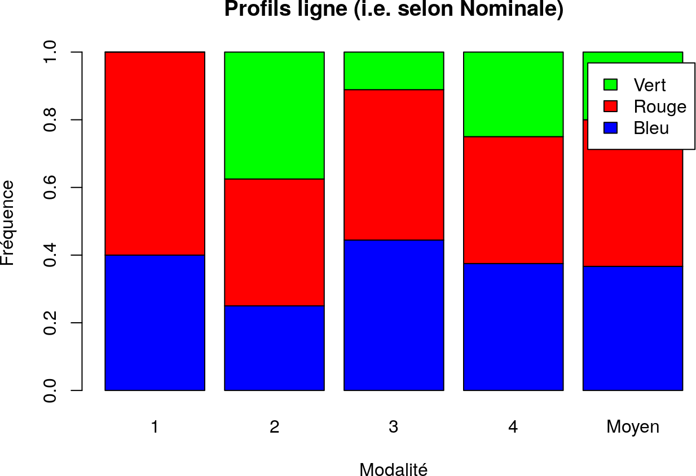
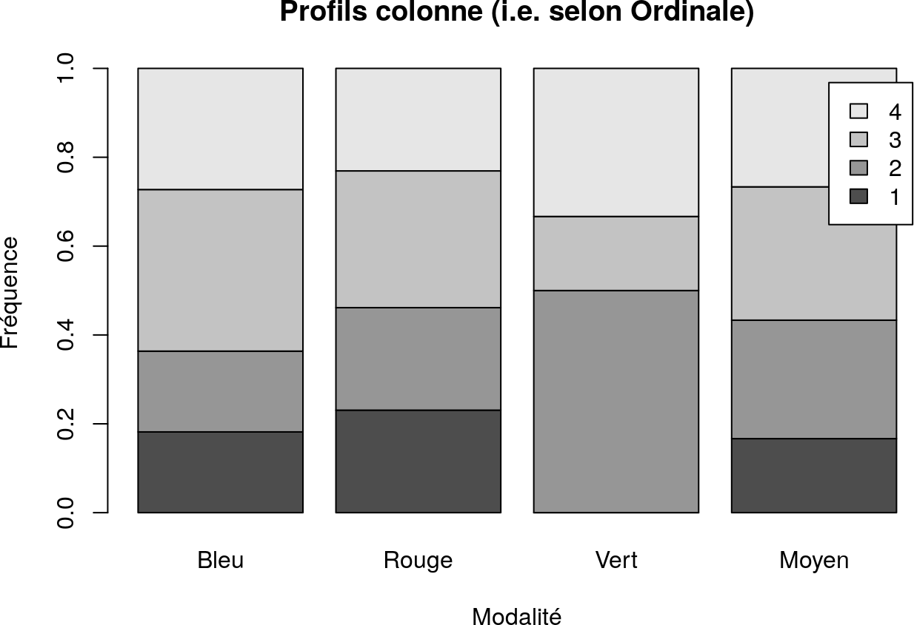

7 Analyse qualitative bivariée
Dans ce chapitre, on considère :
- un corpus de données de \(N\) individus ;
- deux variables qualitatives \(X\) et \(Y\) sur ce corpus de données.
Pour tout entier \(i\) entre \(1\) et \(N\), on note respectivement \(x_i\) et \(y_i\) la valeur des variables \(X\) et \(Y\) pour le \(i\)-ème individu.
7.1 Outils d’analyse
7.1.1 Tableau des contingences
Définition 7.1 Soit \(x\) une modalité de \(X\) et \(y\) une modalité de \(Y\).
L’effectif conjoint de \((x,y)\) est le nombre d’invididus dont la valeur de \(X\) est \(x\) ET la valeur de \(Y\) est \(y\), c’est-à-dire \[\operatorname{card}\{i \in \{1, \ldots, N\},\: x_i = x \text{ et } y_i = y\}\]Définition 7.2 Le tableau des contingences de \(X\) et \(Y\) est un tableau à double entrée avec :
- en ligne, les modalités de \(X\) ;
- en colonne, les modalités de \(Y\).
tel que chaque case contienne l’effectif conjoint de \((x,y)\) où :
- \(x\) est la modalité dans la ligne correspondante ;
- \(y\) est la modalité dans la colonne correspondante.
En R : Calculer le tableau des contingences de deux variables qualitatives
On utilise la fonction
table:L’option
useNAspécifie comment traiter les valeurs manquantesNA:
none tient pas compte des valeurs manquantes dans le calcul ;ifanytient compte des valeurs manquantes dans le calcul, s’il y en a ;alwaystient compte des valeurs manquantes dans le calcul même s’il n’y en a pas.
En R : Ajouter les effectifs marginaux au tableeau des contingences de deux variables qualitatives
On utilise la fonction
addmargins:
7.1.2 Tableau des fréquences
Définition 7.4 Soit \(x\) une modalité de \(X\) et \(y\) une modalité de \(Y\).
La fréquence conjointe de \((x,y)\) est la proportion d’invididus dont la valeur de \(X\) est \(x\) ET la valeur de \(Y\) est \(y\), c’est-à-dire \[\dfrac{\operatorname{card}\{i \in \{1, \ldots, N\},\: x_i = x \text{ et } y_i = y\}}{N}\]Définition 7.5 Le tableau des fréquences de \(X\) et \(Y\) est un tableau à double entrée avec :
- en ligne, les modalités de \(X\) ;
- en colonne, les modalités de \(Y\).
tel que chaque case contienne la fréquence conjointe de \((x,y)\) où :
- \(x\) est la modalité dans la ligne correspondante ;
- \(y\) est la modalité dans la colonne correspondante.
En R : Calculer le tableau des fréquences de deux variables qualitatives
On applique la fonction
prop.tableau résultat detable:
En R : Ajouter les fréquences marginales au tableau des fréquences de deux variables qualitatives
On utilise la fonction
addmargins:addmargins(prop.table(table(data$Ordinale, data$Nominale))) Bleu Rouge Vert Sum 1 0.06666667 0.10000000 0.00000000 0.16666667 2 0.06666667 0.10000000 0.10000000 0.26666667 3 0.13333333 0.13333333 0.03333333 0.30000000 4 0.10000000 0.10000000 0.06666667 0.26666667 Sum 0.36666667 0.43333333 0.20000000 1.00000000
7.1.3 Profils ligne. Profils colonne
7.1.3.1 Profils ligne
Définition 7.7 Soit \(x\) une modalité de \(X\).
Le profil ligne de \(x\) est l’ensemble des fréquences des modalités de \(Y\) dans le sous-ensemble des individus dont la valeur de \(X\) est \(x\).En R : Calculer les profils ligne de deux variables qualititatives
On utilise la fonction
sweep:
MARGINspécifie la dimension selon laquelle sont faits les calculs :
MARGIN = 1indique que les calculs sont faits par ligne ;MARGIN = 2indique que les calculs sont faits par colonne ;STATSspécifie pour chaque ligne/colonne la valeur utilisée comme second membre deFUN;FUNspécifie la fonction à appliquer pour chaque valeur de la ligne/colonne ;ainsi que la fonction
rowSumsqui calcule la somme des éléments de chaque ligne :
On réprésente les profils ligne à l’aide de diagramme en bâtons empilés pour chaque modalité de \(X\).
En R : Représenter les profils ligne de deux variables qualitatives
On utilise la fonction
barplot:profils.ligne <- sweep(contingences, MARGIN = 1, STATS = rowSums(contingences), FUN = "/") # Ajout du profil ligne moyen profils.ligne <- rbind(profils.ligne, Moyen = prop.table(table(data$Nominale))) barplot(t(as.matrix(profils.ligne)), main = "Profils ligne (i.e. selon Nominale)", xlab = "Modalité", ylab = "Fréquence", col = c("blue", "red", "green"), legend.text = TRUE)
Lorsque les profils ligne sont proches du profil ligne moyen, cela suggère qu’il y a peu de lien entre les deux variables.
7.1.3.2 Profils colonne
Définition 7.8 Soit \(y\) une modalité de \(Y\).
Le profil colonne de \(y\) est l’ensemble des fréquences des modalités de \(X\) dans le sous-ensemble des individus dont la valeur de \(Y\) est \(y\).```
En R : Calculer les profils colonne de deux variables qualititatives
On utilise la fonction
sweepainsi que la fonctioncolSumsqui calcule la somme des éléments de chaque colonne :
On réprésente les profils colonnes à l’aide de diagramme en bâtons empilés pour chaque modalité de \(Y\).
En R : Représenter les profils ligne de deux variables qualitatives
On utilise la fonction
barplot:profils.colonne <- sweep(contingences, MARGIN = 2, STATS = colSums(contingences), FUN = "/") # Ajout du profil colonne moyen profils.colonne <- cbind(profils.colonne, Moyen = prop.table(table(data$Ordinale))) barplot(as.matrix(profils.colonne), main = "Profils colonne (i.e. selon Ordinale)", xlab = "Modalité", ylab = "Fréquence", legend.text = TRUE)
Lorsque les profils colonne sont proches du profil colonne moyen, cela suggère qu’il y a peu de lien entre les deux variables.
7.2 Tests d’indépendance
La comparaison entre les profils et leur profil moyen constitue un test visuel d’indépendance.
Il s’agit de mettre en place des tests numériques en comparant les fréquences conjointes observées aux fréquences conjointes théoriques en cas d’indépendance
7.2.1 Fréquences conjointes théoriques en cas d’indépendance
Théorème 7.1 Les variables \(X\) et \(Y\) sont totalement indépendantes si et seulement si :
- tout profil ligne est égal au profil ligue moyen ;
- ET tout profil colonne est égal au profil colonne moyen.
En R : Calculer le tableau des fréquences conjointes théoriques en cas d’indépendance
On effectue un produit matriciel (
%*%) des fréquences marginales :prop.table(table(data$Ordinale)) %*% t(prop.table(table(data$Nominale))) Bleu Rouge Vert 1 0.06111111 0.07222222 0.03333333 2 0.09777778 0.11555556 0.05333333 3 0.11000000 0.13000000 0.06000000 4 0.09777778 0.11555556 0.05333333
test l’opérateur de transposition matricielle.
7.2.2 Test du \(\chi^2\)
Définition 7.9 On définit la distance du \(\chi^2\) entre \(X\) et \(Y\) par \(\displaystyle\sum_{x,y} \dfrac{\left(n_{x,y} - n_{x,y}^0\right)^2}{n_{x,y}^0}\) où, pour toute modalité \(x\) de \(X\) et toute modalité \(y\) de \(Y\) :
- \(n_{x,y}\) est l’effectif conjoint de \((x,y)\) ;
- \(n_{x,y}^0\) est l’effectif conjoint de \((x,y)\) en cas d’indépendance.
Proposition 7.3 La distance du \(\chi^2\) s’écrit également \(N \cdot \displaystyle\sum_{x,y} \dfrac{\left(f_{x,y} - f_{x,y}^0\right)^2}{f_{x,y}^0}\) où, pour toute modalité \(x\) de \(X\) et toute modalité \(y\) de \(Y\) :
- \(f_{x,y}\) est la fréquence conjointe de \((x,y)\) ;
- \(f_{x,y}^0\) est la fréquence conjointe de \((x,y)\) en cas d’indépendance.
En R : Calculer la distance du \(\chi^2\) de deux variables qualitatives
On utilise l’expression avec les fréquences et on réutilise le calcul des fréquences théoriques en cas d’indépendance pour créer la fonction
dist.chisq:
Définition 7.10 Le test d’indépendance du \(\chi^2\) est un test statistique qui consiste à comparer la distance du \(\chi^2\) de \(X\) et \(Y\) avec le seuil de la loi du \(\chi^2\) à \((N_x - 1)(N_y - 1)\) degrés de liberté avec un risque de \(5\%\) où :
- \(N_x\) est le nombre de modalités de \(X\) ;
- \(N_y\) est le nombre de modalités de \(Y\).
Si la distance du \(\chi^2\) dépasse le seuil correspondant, l’hypothèse d’indépendance est rejetée.
| \(k\) | Seuil |
|---|---|
| 1 | 3.84 |
| 2 | 5.99 |
| 3 | 7.81 |
| 4 | 9.49 |
| 5 | 11.07 |
| 6 | 12.59 |
| 7 | 14.07 |
| 8 | 15.51 |
| 9 | 16.92 |
| 10 | 18.31 |
| 11 | 19.68 |
| 12 | 21.03 |
| 13 | 22.36 |
| 14 | 23.68 |
| 15 | 25.00 |
En R : Appliquer le test du \(\chi^2\) `a deux variables qualitatives
On réutilise la fonction
dist.chisqdéfinie précédemment ainsi que la fonctionqchisqqui permet de calculer le seuil de la loi du \(\chi^2\) :degres.liberte <- (nlevels(data$Ordinale) - 1) * (nlevels(data$Nominale) - 1) dist.chisq(data$Ordinale, data$Nominale) > qchisq(0.95, degres.liberte) [1] FALSEDans ce cas, l’hypothèse d’indépendance n’est pas rejetée.
7.2.3 Coefficient de Cramer
L’expression de la distance du \(\chi^2\) obtenue dans la proposition 7.3 indique que cette distance est directement proportionnelle au nombres d’individus \(N\).
Remarque. Soit \((X_1, Y_1)\) et \((X_2, Y_2)\) sont deux couples de variables qualitatives portant sur un corpus de données de \(N_1\) et \(N_2\) individus respectivement avec :
- le même nombre de modalités (donc le même seuil) ;
- les mêmes fréquences conjointes.
Définition 7.11 Le coefficient de Cramer de \(X\) et \(Y\) est défini par \(\sqrt{\dfrac{\Delta}{N \cdot \min \{N_x - 1,\,N_y - 1\}}}\) où :
- \(\Delta\) est la distance du \(\chi^2\) de \(X\) et \(Y\) ;
- \(N_x\) est le nombre de modalités de \(X\) ;
- \(N_y\) est le nombre de modalités de \(Y\).
Le coefficient de Cramer permet de décrire la dépendance entre les variables \(X\) et \(Y\) :
- une valeur nulle caractérise l’indépendance des variables \(X\) et \(Y\) ;
- une valeur maximale caractérise une dépendance totale.
En R : Calculer le coefficient de Cramer de deux variables qualitatives
On utilise la fonction
dist.chisqdéfinie précédemment pour créer la fonctioncramer.phi: